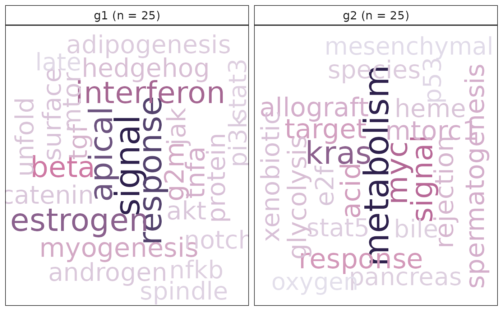

R/plottingFunctions.R
plotMsigWordcloud.RdGiven a gene set collection, this function computes the word frequency of gene set names from the Molecular Signatures Database (MSigDB) collection (split by _). Word frequencies are also computed using short descriptions attached with each gene set object.
plotMsigWordcloud(
msigGsc,
groups,
weight = NULL,
measure = c("tf", "tfidf"),
version = msigdb::getMsigdbVersions(),
rmwords = getMsigBlacklist(),
type = c("Name", "Short")
)| msigGsc | a GeneSetCollection object, containing gene sets from the
MSigDB. The |
|---|---|
| groups | a named list, of character vectors or numeric indices specifying node groupings. Each element of the list represent a group and contains a character vector with node names. |
| weight | a named numeric vector, containing weights to apply to each gene-set. This can be -log10(FDR), -log10(p-value) or an enrichment score (ideally unsigned). |
| measure | a character, specifying how frequencies should be computed. "tf" uses term frequencies and "tfidf" (default) applies inverse document frequency weights to term frequencies. |
| version | a character, specifying the version of msigdb to use (see
|
| rmwords | a character vector, containing a blacklist of words to discard from the analysis. |
| type | a character, specifying the source of text mining. Either gene
set names ( |
a ggplot object.
data("hgsc")
groups <- list('g1' = names(hgsc)[1:25], 'g2' = names(hgsc)[26:50])
plotMsigWordcloud(hgsc, groups, rmwords = getMsigBlacklist())
#> Warning: Assuming the organism to be human.
#> Warning: Assuming the organism to be human.
#> One word could not fit on page. It has been removed.
